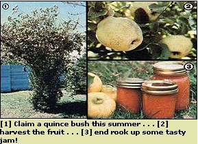

A reader reminds us of a treat our grandmas might have made.
In my section of California (and throughout Zones 5 through 8 on the USDA's plant hardiness map, which can be found on page 180 of this issue), anybody who takes a summer drive down country roads may see a number of large bushes that will be loaded-come harvest time-with attractive, apple-sized, golden fruit. Those delicious-looking globes are quinces (Cydonia oblonga) and-while they're not used for much more than an occasional treat for livestock nowadays-the puckery-when-raw fruits were once the main ingredient in a mouthwatering array of early American pies, marmalades, jellies, and jams.
If you can stake out an available quince bush while you're on an outing this summer, that single shrub once its fruit ripens-will probably provide you with all the fixings you'll need. Better yet-since most people consider the fruits inedible-you shouldn't have any trouble obtaining permission to pick them. Why not get yourself a bucketful (about 10 pounds), gather together some honey, jars and paraffin . . . and give my grandmother's quince jam recipe a try!
First scrub each fruit to remove its fuzzy coating, but don't peel off its skin. Then quarter the washed quinces and push out their seeds without trying to remove the cores. Put the quince wedges in a large pan and add enough water to cover the slices by about half an inch.
Bring the kettle to a boil and let it simmer until the fruit becomes soft (this should take between 20 and 30 minutes). Let the pot cool, then drain off the juice and save it. At this point you can easily remove the sections of core from each quince slice, and then break the pieces up-a few at a time-in your blender or food grinder . . . adding extra water if necessary.
Once all the cooked fruit has been "through the mill", return the "quince sauce" to the pan-along with the juice drained off earlier-and add honey to taste. (The sweetness of quinces will vary from year to year or tree to tree . . . so it's hard to predict exactly how much honey the recipe will need. I just start with about a third of a cup of sweetener to each cup of fruit . . . and let my tastebuds take it from there.)
Now bring the mixture to a boil and "let 'er roll" for 10 minutes, stirring constantly. Then lower the heat to simmer and let the jam cook for about 10 to 15 minutes (don't stop mixing it!), or until the sauce takes on a lovely shade of pink. The rosy color is the signal that your jam is done . . . simply pour it into sterile glasses and seal your tasty treat for use during the rest of the year!
|
 |
|
|